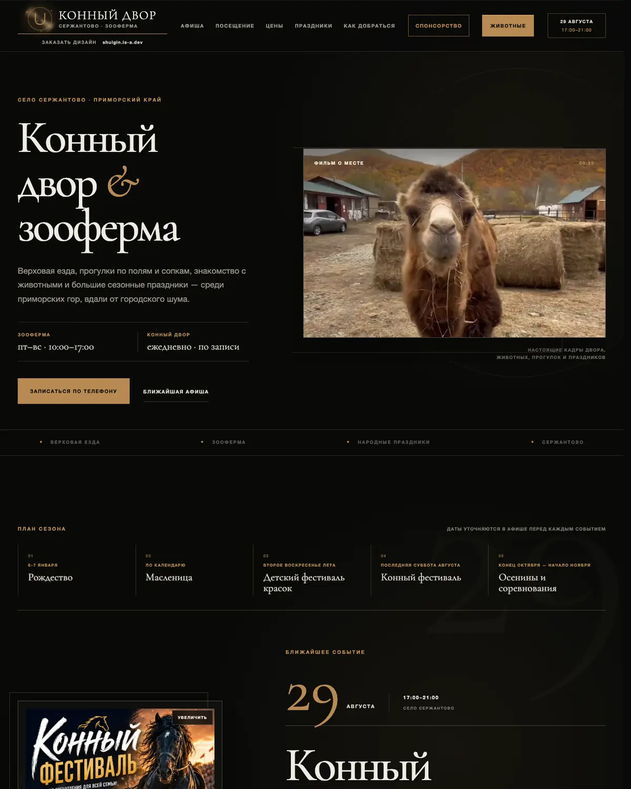
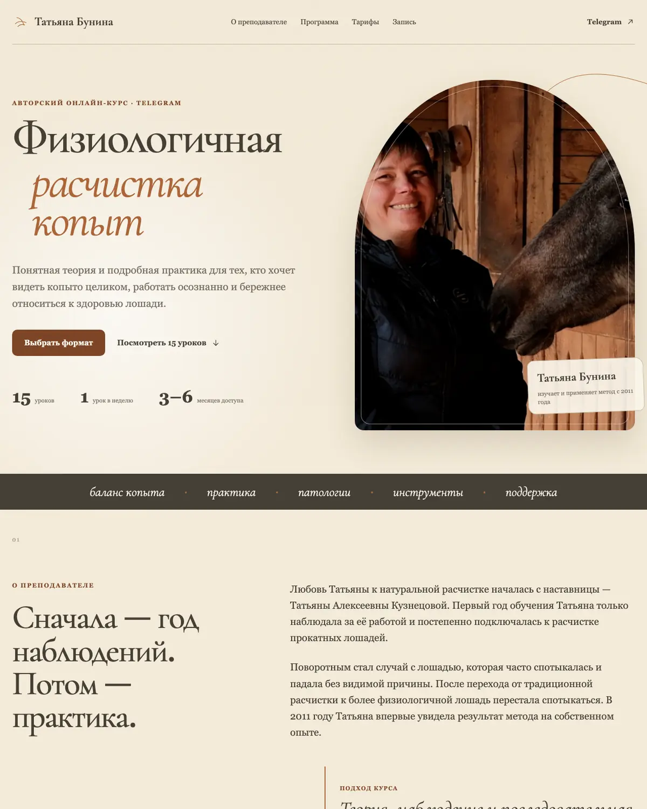
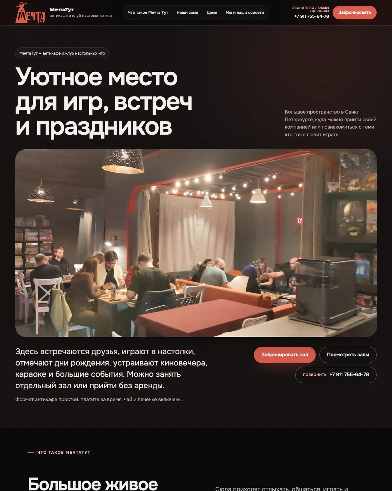
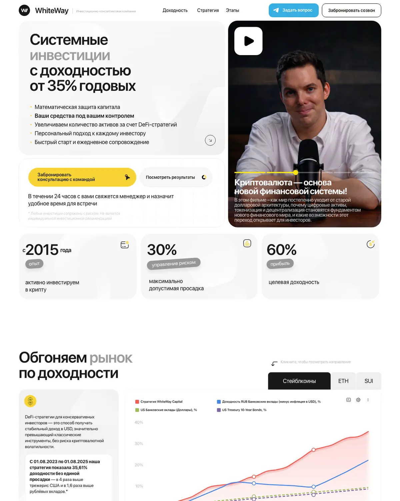
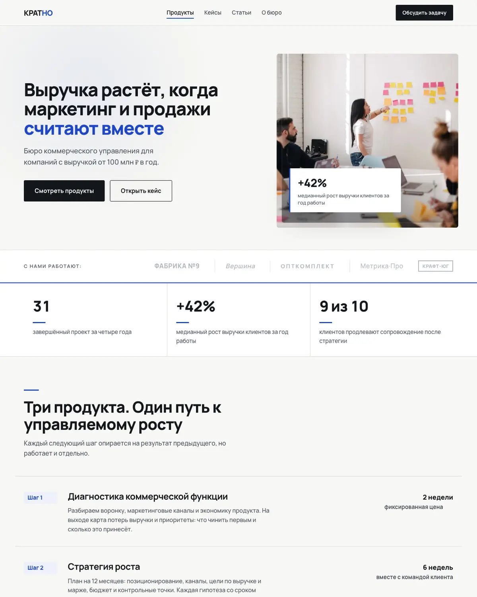
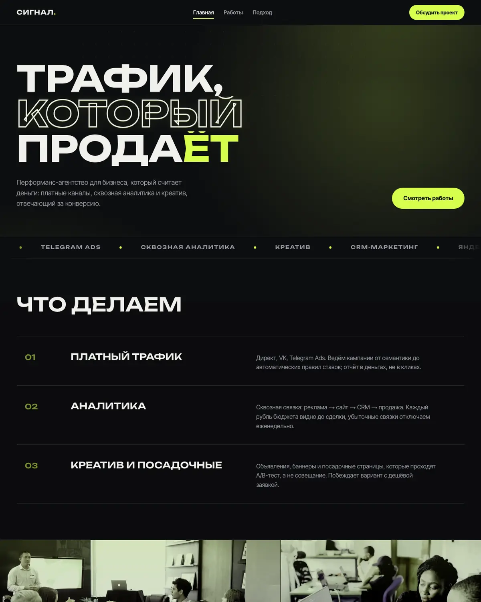

Превращаю задачу, объяснённую словами, в работающую программу.
Сайт, бот, автоматизация, приложение, помощник на искусственном интеллекте. Опишите, что мешает или чего хочется, обычными словами. За один рабочий день отвечу, решается ли это, как и сколько стоит.
Открывается и работает
Не картинки на память: всё по живым адресам. Четыре сайта сделаны для заказчиков и компании, два собраны как пример: компании придуманы, сайты настоящие.

Конный двор в Сержантово
Хозяйка меняет цены и фотографии с телефона, без программиста. Афиша, животные, цены, дорога.
Открыть сайт
Курс Татьяны Буниной
Страница авторского онлайн-курса: программа, тарифы, запись в Telegram. Живёт по своему адресу, заказчица ведёт сама.
Открыть сайт
Мечта Тут
Антикафе и клуб настольных игр в Петербурге: залы, цены, бронирование, галереи залов. На сайт идёт реклама, он принимает гостей каждый день.
Открыть сайт
WhiteWay
Для компании, где работал: сопровождение, правки и деплой сайта инвестиционно-консалтинговой компании в период работы в команде.
Открыть сайт
Бюро «Кратно»
Как выглядит сайт услуг: понятная структура, кейсы, заявка. Компания придумана, сайт настоящий.
Посмотреть
Студия «Сигнал»
Для тех, кто продаёт результат: цифры, отзывы, расчёт прямо на странице. Компания придумана, сайт настоящий.
ПосмотретьОбразец разбора: ошибка на сайте, причина и проверка исправления
Кроме сайтов: торговые системы, которые работают на реальных деньгах, приложение для Mac в магазине, исследовательские и аналитические задачи. Технические подробности в портфолио.
Из сообщений в Telegram после сдачи, дословно, с сокращениями.
«Вы реально сделали мне огромную работу. Люди со стороны говорят: сайт прям крутой. Я на такие детали внимания не обращаю, а они замечают. Спасибо большое.»
«Вот теперь идеальный сайт, реально. Сто из десяти. Всё чётко, всё красиво. Буду презентовать везде: в Telegram, во ВКонтакте, на YouTube, закреплю во всех роликах. Спасибо, что взялся.»
Готовые варианты: условия и заказ
Три вещи с понятной ценой: скачайте бесплатно или закажите в переписке. Заодно понятен порядок цен.
Qwerty Switcher
БесплатноПриложение для Mac: само исправляет набранное в неверной раскладке, работает без облака. Бесплатно, без подписки и ключей.
СкачатьТехнический разбор сайта по 152-ФЗ
500 ₽Первый шаг бесплатный: проверка главной за минуту, без контактов. Полный разбор по 16 пунктам со статусом каждого пункта и ориентиром по КоАП за 500 ₽, отчёт за день. Не юридическое заключение.
Заказать проверкуПочинка сайта из нейросети
119 $Сайт собрали в нейросети, и он ведёт себя странно. Проверяю проблемный сценарий руками, нахожу причину и показываю результат исправления.
Посмотреть образец отчётаНе знаете, нужен ли разбор? Бесплатная проверка сайта за минуту покажет, какие технические признаки на главной стоит проверить. Дальше по лестнице: полный разбор за 500 ₽ → исправления от $119 → сопровождение.
Всё остальное делается под вас. Сумму называю письменно после разговора, до начала работы. Подробнее про цену.
Без терминов и брифов на десять листов
-
1
Разговор и оценка
Пятнадцать минут в переписке или голосом. Рассказываете, чем занимаетесь и что мешает. Вопросы задаю я, разбираться в технике вам не нужно. К концу следующего рабочего дня у вас письменно: что делаем, сколько займёт, сколько стоит.
-
2
Показываю, как будет
Через несколько дней присылаю макет или работающий кусочек: на ваших фотографиях и текстах, а не абстрактный пример из интернета.
-
3
Правим вместе
Говорите, что поменять. Меняю. Это часть работы, а не «дополнительная услуга по тарифу».
-
4
Запускаю
Открывается по вашему адресу, работает на телефонах, заявки приходят вам. Показываю, как всем этим пользоваться, простыми словами.
-
5
Остаюсь рядом
Месяц после запуска мелкие правки входят в цену: тексты, фотографии, цены и контакты. Новый раздел или функция оцениваются отдельно. Дальше по-человечески: написали, ответил.
Уже понятно, что нужно? Напишите в двух словах, за день отвечу, как это решается и сколько стоит.
Кому подойдёт, а кому нет
Хорошо получается, когда
- задача описана результатом: «хочу, чтобы клиенты записывались сами», а не «нужен сайт на такой-то платформе»
- нужен один человек, который отвечает за всё, а не команда с менеджером
- в первые дни есть кому ответить на мои вопросы и прислать материалы
- дело любого размера: от мастера, который работает один, до компании с отделами
Не берусь, когда
- «сделайте как у конкурента, один в один»
- нужно к завтрашнему утру, а работы на две недели
- некому принимать решения: правки идут от трёх человек и противоречат друг другу
- накрутки, спам-рассылки, обман пользователей
Правила, от которых не отступаю
Скажу, если не стоит
Когда задача не окупится или решается готовым сервисом, вы услышите это сразу.
Оформляем официально
Я самозанятый: договор и чек из налоговой, оплата на карту или счёт, как удобно вам или вашей бухгалтерии.
Отвечает человек
Разговариваете с тем, кто делает, а не с менеджером.
-
Место в интернете
- Сайт: услуги, цены, фотографии, форма заявки
- Сайт, который вы правите сами с телефона Так у конного двора
- Страница мероприятия, тура, набора, курса Например, курс
-
Клиенты и заявки
- Бот в Telegram: принимает заявку и записывает на время
- Онлайн-запись с календарём и свободными окнами
- Напоминание клиенту накануне визита
-
Рутина, которую делает машина
- Отчёты и выгрузки, которые вы сводите каждую неделю
- Перенос данных между таблицами, сайтом и площадками, без ручного копирования
- Заявки с Авито, ВКонтакте, WhatsApp и сайта приходят в одно окно
-
Помощники на искусственном интеллекте
- Отвечает клиентам по вашему прайсу и правилам
- Переводит звонки и голосовые в текст и краткую выжимку
- Поиск по вашим документам: «где был тот договор»
То, что спрашивают до начала
Сколько это стоит?
Сумму называю письменно после разговора, до начала работы. Цена фиксируется для согласованного объёма, новые задачи оцениваем отдельно до начала работы. Точную цифру заранее не публикую: одна и та же на словах задача бывает на два дня и на месяц. Порядок цен виден по готовому выше.
А что придётся платить потом?
За то, что сделанное просто работает, платить мне не нужно: абонентской платы у меня нет. Останутся прямые расходы: адрес сайта и хостинг, а если делаем бота или ИИ-помощника, ещё сервер и плата за обращения к нейросети. Сколько это выходит в месяц, посчитаю и назову до начала работы, платите вы напрямую, не через меня. Мелкие правки месяц после запуска входят в цену: тексты, фотографии, цены и контакты. Новый раздел или функция оцениваются отдельно.
Я совсем не разбираюсь в технике.
Так и должно быть, это моя часть. От вас нужен рассказ о деле обычными словами. Термины я в разговор не тащу, а после запуска показываю, куда нажимать.
Сколько ждать?
Срок называю вместе с ценой до старта. Простые вещи: несколько дней. Сайт: неделя или две. Большая автоматизация: дольше, но по частям, чтобы вы видели движение, а не ждали в тишине.
Если не понравится?
Промежуточный результат показываю до запуска, правки по ходу входят в работу. Принимаете работу вы, а не я: пока не сказали «да», не запускаю.
У меня нет ни фотографий, ни текстов.
Обычное дело. Тексты напишу после разговора, вы поправите. По фотографиям подскажу, что снять на телефон: этого почти всегда достаточно.
Кому потом принадлежит сделанное?
Вам. Адрес и доступы оформляются на вас, отдаю всё. Я не держу работу в заложниках и не беру абонентскую плату за то, что она просто работает.
Я в другом городе, это помешает?
Нет. Работаю с любым регионом, общаемся в мессенджере или голосом. Разница во времени решается перепиской.
А то, чего вы раньше не делали?
Берусь, если вижу, как это сделать хорошо. Использую ИИ в разработке; постановка задачи, проверка и ответственность за результат остаются на мне. Если задача не по силам или дешевле решается готовым сервисом, скажу сразу и подскажу, куда смотреть.
Опишите задачу, завтра узнаете, решается ли и сколько стоит
Отвечу, что имеет смысл сделать в вашем случае, а что деньги на ветер. Даже если работать со мной вы в итоге не станете.
- Что писатьСвоими словами: чем занимаетесь и что не устраивает. Готовое задание не нужно.
- Что будет дальшеЗадам несколько вопросов и к концу следующего рабочего дня напишу, как это решается, сколько займёт и сколько стоит.
- Что это вам стоитРазговор и оценка ничего не стоят, дальше решаете вы.